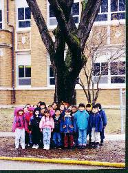
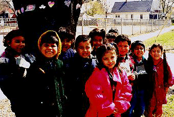
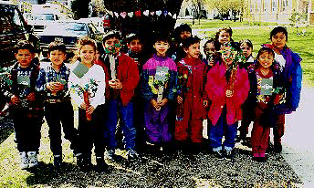

Student Project
Jardin Mundial Kindergarten
Aurora, Illinois USA

"The name of our tree is Honey Locust. These pictures show the hearts that we colored and hung around the tree. We decided that we wanted to sing 'Happy Birthday' to our special tree on Arbor Day (April 24, 1997)."


"This picture shows the tree we constructed from paper towel cardboard tubes, pipe cleaners, and tissue paper. The buds on this tree, as of May 23, are still developing. There are no good size leaves showing yet. Spring is taking a long time to get to Aurora."
Kindergarten
Teacher: Nelida M. Frontera
Jardin Mundial School
Aurora, Illinois USA
Honey Locust
TBA
Age: Unknown
Circumference: 99 inches at 54 inches from the base
Location: Aurora, Illinois USA
 Return to Main Page
Return to Main Page
Comments
Please send e-mail to: June Julian jj68@nyu.edu